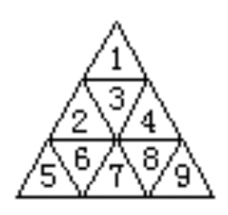
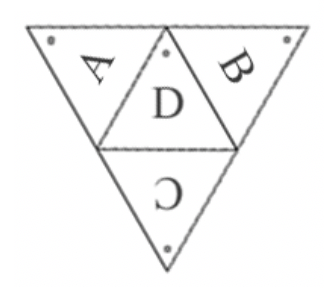

一个边长为 $n$ 的正三角形可以被划分成若干个小的边长为 $1$ 的正三角形，称为单位三角形。如图，边长为 $3$ 的正三角形被分成三层共 $9$ 个小的正三角形，我们把它们从顶到底，从左到右以 $1$~$9$ 编号(见图)。同理，边长为 $n$ 的正三角形可以划分成 $n^2$ 个单位三角形。

四个这样的边长为 $n$ 的正三角形可以组成一个三棱锥。我们将正三棱锥的三个侧面依顺时针次序（从顶向底视角）编号为 $A, B, C$，底面编号为 $D$。侧面的 $A, B, C$ 号三角形以三棱锥的顶点为顶，底面的 $D$ 号三角形以它与 $A, B$ 三角形的交点为顶。左图为三棱锥展开后的平面图，每个面上标有圆点的是该面的顶，该图中侧面 $A,B,C$ 分别向纸内方向折叠即可还原成三棱锥。我们把这 $A、B、C、D$ 四个面各自划分成 $n^2$ 个单位三角形。
对于任意两个单位三角形，如有一条边相邻，则称它们为相邻的单位三角形，显然，每个单位三角形有三个相邻的单位三角形。现在，把 $1$~$4n^2$ 分别随机填入四个面总共 $4n^2$ 个单位三角形中。
现在要求你编程求由单位三角形组成的最大排序二叉树。所谓最大排序二叉树，是指在所有由单位三角形组成的排序二叉树中节点最多的一棵树。对于任一单位三角形，可选它三个相邻的单位三角形中任意一个作为父节点，其余两个分别作为左孩子和右孩子。当然，做根节点的单位三角形不需要父节点，而左孩子和右孩子对于二叉树中的任意节点来说并不是都必须的。
 Comet OJ
Comet OJ